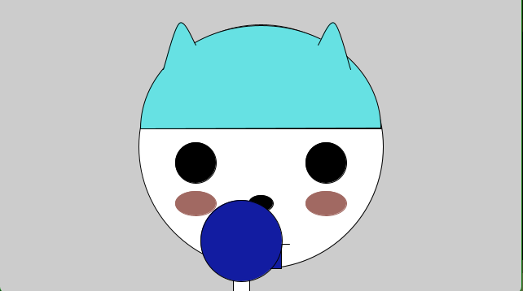
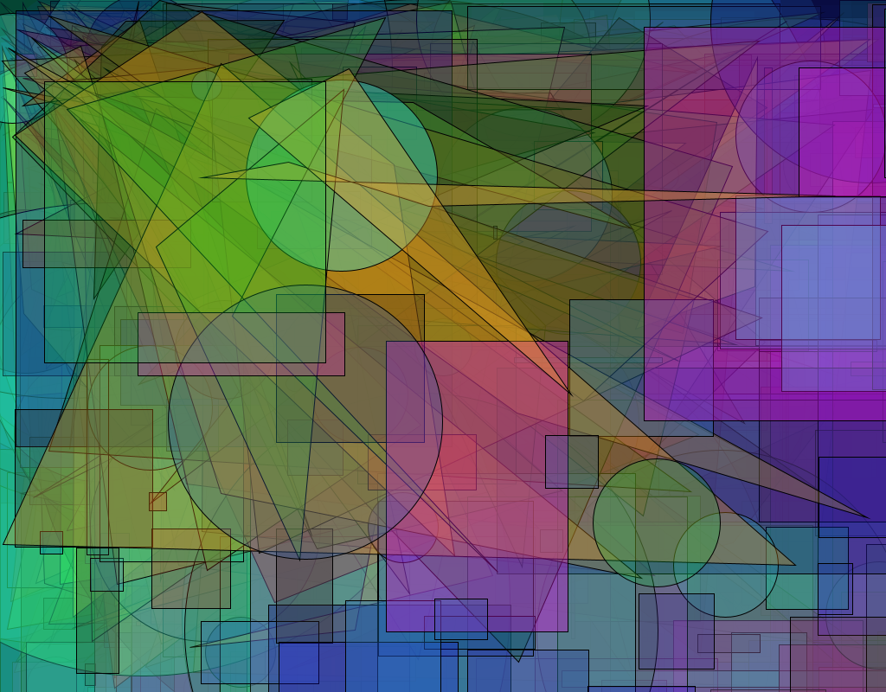
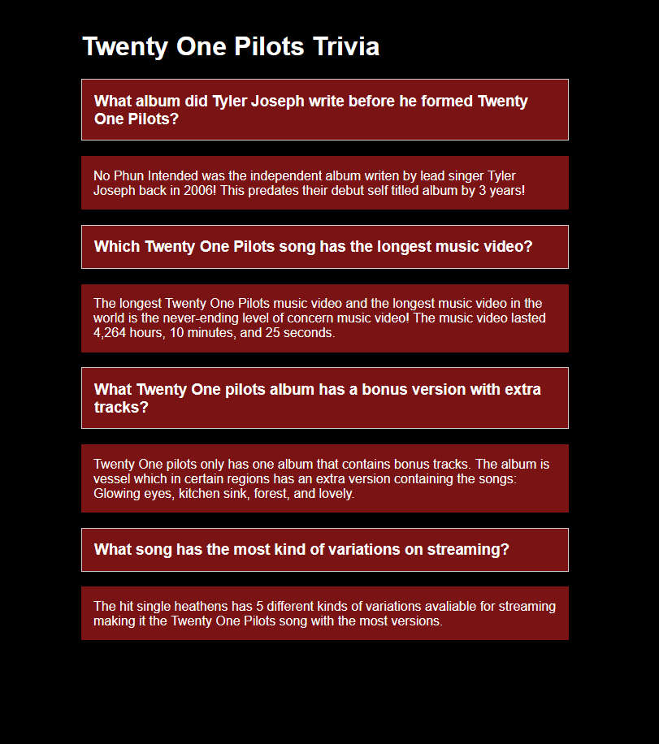
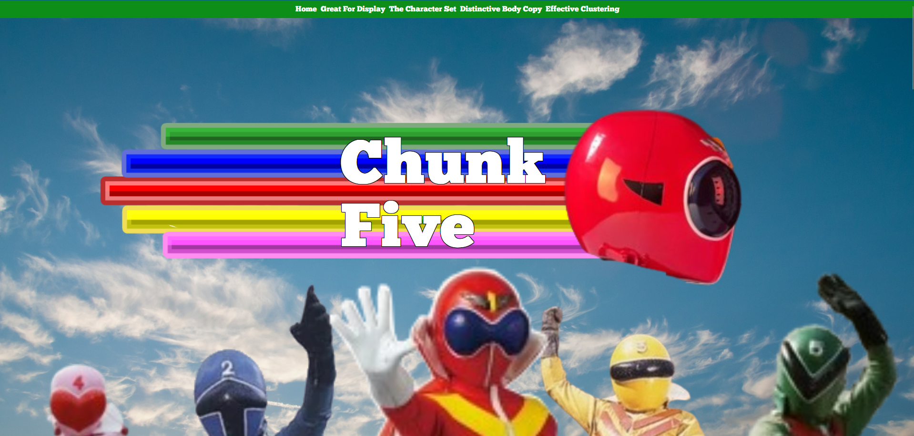

Throughout the years I've worked on various projects developing my skills. They are as follows:
I've gone through different programs throughout the years. These are just a few
These are screenshots of previous works I've created
In this project what I am showcasing here is a character made entirely of code. The lollipop is an interactive mouse. It replaces the mouse cursor and when hovering ove the mouth of the character turns it's tounge blue! As well using the arrow keys you can move the tonuge up and down so the character can lick it!

For this project I created an alogrithm that places shapes through a specific order that I coded it to follow. This allows the program to run as long as I want it to and create a collage. All you need to do to export the image is to click with the moust too!

Coding used: Java
In this prokect what I created was an assortment of trivia questions based on the popular band Twenty One Pilots! Through this project I was able to apply different effects when the user interacts with the website

Coding used: HTML, CSS, JavaScript, and JQuery
This project showcases how web development can sell anything! I created this website to promote a specific kind of font. I created the entire site on a single html file while creating different sections that users can reach through a single click rather than scrolling!

Coding used: HTML and CSS